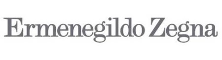

홈 > 브랜드 매거진 > 에르메네질도 제냐
에르메네질도 제냐
제냐(Zegna)는 1910년 이탈리아에서 모직 원단 공장으로 출발한 럭셔리 남성복 브랜드이다.
산업 분야 패션·럭셔리 · 공개 등급 자료 기반 · 브랜드 평가 4.2 ★


한눈에 보는 브랜드
에르메네질도 제냐는 1910년 이탈리아 피에몬테주 비엘라 산악지대 트리베로에서 18세 청년 에르메네질도 제냐가 모직 방직소로 창업했다. 시계공이던 아버지 안젤로의 직물 사업을 이어받아 형제와 합자한 울 밀이 출발점이다.
두 차례 결정적 전환은 양모에서 완성복으로 사업을 확장한 수직계열화, 그리고 2021년 뉴욕증권거래소 상장이다. 현재 제냐·톰브라운·톰포드 패션을 거느린 그룹으로 임직원 7천여 명, 연 매출 약 19억 유로 규모다.
브랜드 관점
제냐의 핵심 차별점은 양모 원사부터 직물 제직·가공, 완성복, 글로벌 매장까지 한 손에 쥔 수직계열화다. 로로피아나가 비쿠냐·베이비 캐시미어 같은 희귀 섬유의 배타적 희소성으로, 브루넬로 쿠치넬리가 장인성과 지속가능성 서사로 승부한다면, 제냐는 자체 방직 역량과 정장 테일러링의 산업적 깊이로 차별화한다.
2021년 사명에서 창업자 이름을 떼고 단일 브랜드 제냐로 압축한 리브랜딩, 톰브라운 인수와 톰포드 패션 라이선스 확보는 단일 정장 하우스에서 다브랜드 럭셔리 그룹으로의 체질 전환을 뜻한다. 2026년 기준 제냐 브랜드는 약 11억 유로로 견조하나 톰브라운은 역성장 중이어서 포트폴리오 균형이 과제다.
조용한 럭셔리 흐름 속 한국에선 신세계 강남·롯데본점·갤러리아 등 핵심 백화점에 입점해 남성 정장 수요를 흡수하고, 글로벌 매출은 중화권 회복 여부에 민감하다.
시작과 성장
20세기 초 이탈리아 비엘라는 알프스 청정수와 양모 전통이 결합한 모직 산업의 중심지였다. 1910년 에르메네질도 제냐는 이 환경을 토대로 트리베로에 울 밀을 세우고, 영국·호주산 최고급 원모를 직접 수입해 세계에서 가장 아름다운 직물을 만든다는 목표를 내세웠다.
첫 전환은 1930년대로, 창업자는 직물 명성을 굳히는 한편 1938년 트리베로 산악을 가로지르는 파노라마 도로를 사재로 건설하며 산업과 자연의 공존을 실천했다. 두 번째 전환은 1960년대 이후 직물에서 완성복으로의 확장과 글로벌 리테일 구축이다.
1980년대 파리·1990년대 밀라노를 거쳐 직영 매장망을 넓혔고, 1991년 중국 시장에 일찍 진입해 아시아 럭셔리 성장을 선점했다. 2018년 톰브라운 다수 지분 인수, 2021년 뉴욕증권거래소 상장, 2023년 톰포드 패션 라이선스 확보로 다브랜드 그룹 체제를 완성했다.
브랜드 아이덴티티
제냐의 가치는 자연과 산업의 조화, 원단에서 시작되는 장인성, 절제된 우아함이다. 2021년 리브랜딩으로 브랜드명을 제냐로 단순화하고 워드마크를 대문자 세리프로 정비했으며, 비쿠냐 톤 띠 가운데를 검은 선이 가로지르는 더블 스트라이프 로고를 도입했다.
이 선은 창업자가 산악에 닦은 파노라마 도로에서 따온 여정의 상징이다. 타깃은 성공한 30~60대 남성, 사업과 격식의 자리에서 드러나지 않는 품질을 중시하는 고객층이다.
브랜드 보이스는 과시 없는 자신감, 유산을 현대 언어로 풀어내는 차분하고 정제된 어조다.
제품과 서비스
현재 상태
법인은 네덜란드 등기 에르메네질도 제냐 N.V.이며 운영 본사는 밀라노에 둔다. 2021년 12월 인베스트인더스트리얼 주도 기업인수목적회사와의 결합으로 뉴욕증권거래소에 상장했고, 이탈리아 럭셔리 하우스 중 첫 뉴욕증권거래소 상장 사례다.
지배구조는 제냐 가문이 가족 지주회사 몬테루벨로를 통해 약 60%를 보유해 경영권을 유지한다. 임직원은 7천여 명.
2025 회계연도 그룹 매출 약 19억 유로, 순이익 약 1억 유로로 전년 대비 20% 증가했다. 2026년 1월부로 질도 제냐가 그룹 집행 회장, 잔루카 탈리아부에가 그룹 CEO, 에도아르도·안젤로 제냐가 제냐 브랜드 공동 CEO를 맡는 새 리더십 체제를 가동했다.
타임라인
BI/CI 변천사
함께 읽을 브랜드
에르메스는 속도보다 장인성과 기다림의 가치를 브랜드 경험으로 만든다. 제품은 희소성과 품질을 통해 욕망을 만들지만, 더 깊은 차별성은 쉽게 대체되지 않는 제작 태도와...
 패션·럭셔리 · 매거진 완성프라다
패션·럭셔리 · 매거진 완성프라다프라다는 아름다움을 익숙한 화려함보다 지적인 긴장감으로 표현하는 브랜드다. 소재와 형태, 절제된 색감은 패션을 단순한 장식이 아니라 관찰과 해석의 대상으로 만든다.
 패션·럭셔리 · 자료 기반몽클레르
패션·럭셔리 · 자료 기반몽클레르몽클레르(Moncler)는 1952년 프랑스에서 설립돼 현재 이탈리아에 본사를 둔 럭셔리 다운재킷 브랜드이다.
 패션·럭셔리 · 편집 검수조르지오 아르마니
패션·럭셔리 · 편집 검수조르지오 아르마니조르지오 아르마니(Giorgio Armani)는 1975년 밀라노에서 설립된 이탈리아 럭셔리 패션 하우스이다.
 패션·럭셔리 · 자료 기반돌체앤가바나
패션·럭셔리 · 자료 기반돌체앤가바나돌체앤가바나(Dolce & Gabbana)는 1985년 도메니코 돌체와 스테파노 가바나가 설립한 이탈리아 럭셔리 패션 하우스이다.
 패션·럭셔리 · 자료 기반보테가 베네타
패션·럭셔리 · 자료 기반보테가 베네타보테가 베네타(Bottega Veneta)는 1966년 이탈리아 비첸차에서 설립된 럭셔리 가죽제품 브랜드이다.
 패션·럭셔리 · 자료 기반Coccinelle
패션·럭셔리 · 자료 기반Coccinelle코치넬레(Coccinelle)는 1978년 이탈리아 파르마 인근에서 설립된 가죽 핸드백·액세서리 브랜드이다.
 패션·럭셔리 · 편집 검수디젤
패션·럭셔리 · 편집 검수디젤디젤(Diesel)은 1978년 렌조 로소가 이탈리아 브레간체에서 설립한 데님 중심의 컨템포러리 패션 브랜드다. 도발적이고 실험적인 디자인으로 데님 헤리티지를 재해석...